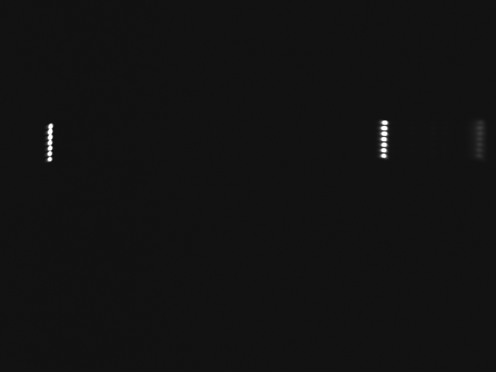
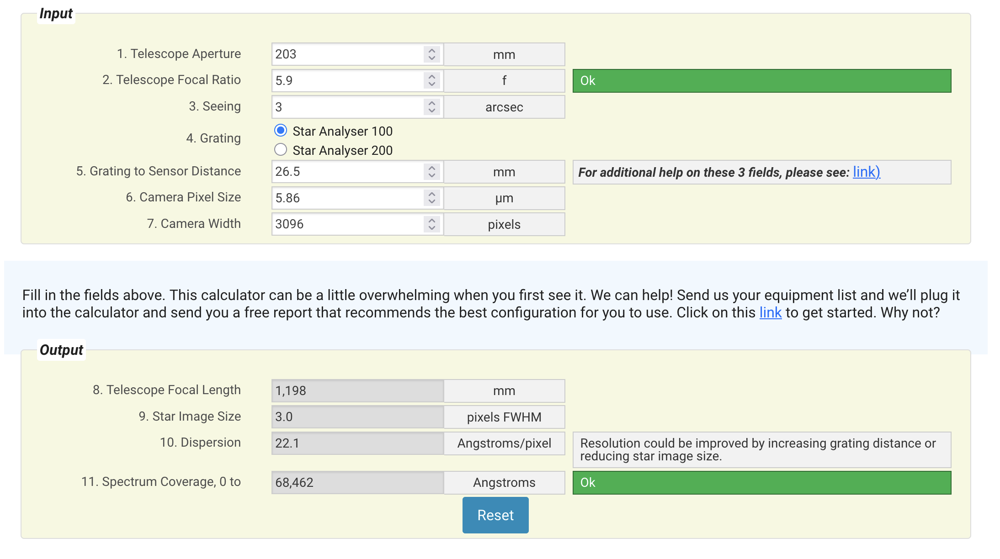
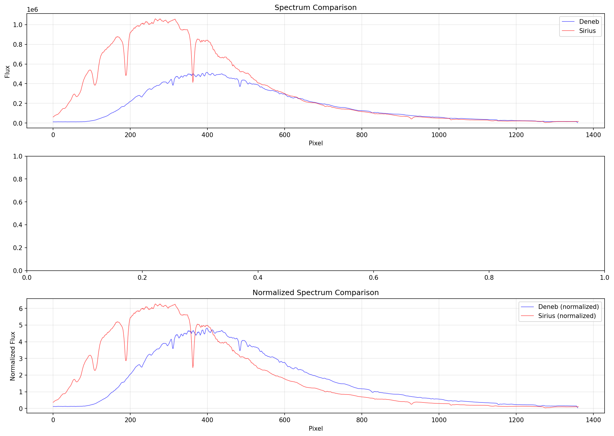
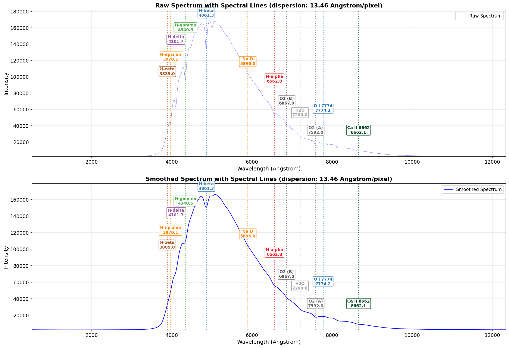
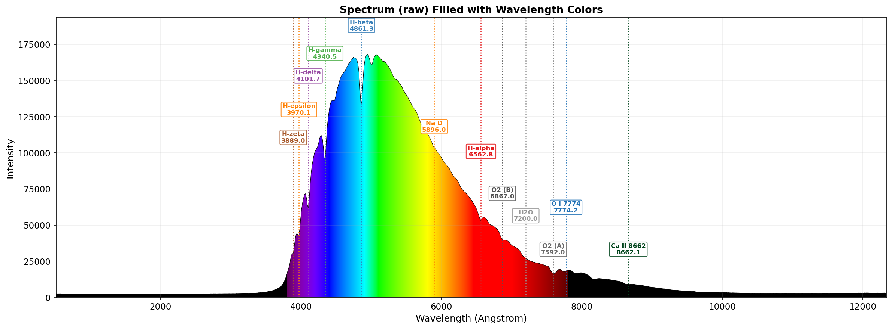

Light is a travelling ripple of electric and magnetic fields
James Clerk Maxwell · Heinrich Hertz · Max Planck & Albert Einstein
By the 1860s Maxwell had unified electricity and magnetism and found something astonishing hiding in the equations: a self-sustaining wave. A changing electric field makes a magnetic field, which makes an electric field, and so on — a ripple that marches through empty space at one fixed speed, $c\approx300{,}000$ km/s. That speed matched measured light. Light is that wave.
A wave is pinned down by two numbers: its wavelength $\lambda$ (crest to crest) and its frequency $f$ (crests passing per second). They aren't free of each other — because the wave always travels at $c$, a longer wavelength forces a lower frequency. Colour is just wavelength.
Visible light is a thin slice. Stretch $\lambda$ longer and you reach infrared, microwaves, radio; squeeze it shorter and you reach ultraviolet, X-rays, gamma rays. They are all the same thing — the electromagnetic spectrum — differing only in wavelength. Hertz generated and detected radio waves in 1887, proving Maxwell right.
Planck and Einstein added the quantum twist: light is delivered in packets — photons — each carrying energy $E=hf$. Bluer light hits harder, photon for photon. Every spectral fingerprint we will read is a photon of a precise energy, and therefore a precise wavelength. Spectroscopy is the art of counting those wavelengths.
Slide across the electromagnetic spectrum
Drag the marker from kilometre-long radio waves down to picometre gamma rays. Read off the wavelength, frequency and photon energy — and what astronomers do in that band. Watch the inverse link: as $\lambda$ shrinks, $f$ and $E$ climb together.
∴ The reasoning: why bluer light is more energetic
Two short steps tie wavelength, frequency and energy into one chain.
- A wave repeats every period $T$ seconds, so its frequency is $f=1/T$ (cycles per second).
- In exactly one period the whole pattern slides forward by one wavelength $\lambda$. Speed is distance over time, so $c=\lambda/T=\lambda f$. Since $c$ is a constant, $\lambda$ and $f$ are locked in inverse proportion — double the wavelength, halve the frequency.
- The quantum rule: a single photon's energy depends only on its frequency, $E=hf$, where $h$ is Planck's constant.
- Substitute $f=c/\lambda$ from step 2 into step 3: $E=hc/\lambda$.
Practice problems
1. A red hydrogen photon from a star (the Hα line) has wavelength $\lambda=656.3$ nm. Using $E=hc/\lambda$ with $h=6.626\times10^{-34}$ J·s and $c=2.998\times10^{8}$ m/s, find its energy in joules and in electron-volts ($1\ \text{eV}=1.602\times10^{-19}$ J).
Show solution
- Plug into $E=hc/\lambda$. $E=\dfrac{(6.626\times10^{-34})(2.998\times10^{8})}{656.3\times10^{-9}}$.
- Numerator. $hc=1.986\times10^{-25}$ J·m; divide by $6.563\times10^{-7}$ m $\Rightarrow E=3.03\times10^{-19}$ J.
- Convert to eV. $E=\dfrac{3.03\times10^{-19}}{1.602\times10^{-19}}=1.89$ eV.
2. Radio astronomers map cold hydrogen gas using the famous spin-flip line at frequency $f=1420$ MHz. Using $c=\lambda f$, what is its wavelength? (This is the "21-cm line.")
Show solution
- Rearrange. $\lambda=c/f$.
- Substitute. $\lambda=\dfrac{2.998\times10^{8}\ \text{m/s}}{1.420\times10^{9}\ \text{Hz}}=0.211$ m.
- In centimetres. $0.211\text{ m}=21.1$ cm.
3. An X-ray telescope detects photons of wavelength $\lambda=1.0$ nm. Using $E=hc/\lambda$, find the photon energy in eV — and confirm it dwarfs the visible Hα photon of problem 1.
Show solution
- Apply $E=hc/\lambda$. $E=\dfrac{1.986\times10^{-25}}{1.0\times10^{-9}}=1.99\times10^{-16}$ J.
- Convert to eV. $E=\dfrac{1.99\times10^{-16}}{1.602\times10^{-19}}=1.24\times10^{3}$ eV.
White light is not white — it is every colour at once
Isaac Newton, with a prism and a darkened room
For centuries a prism's colours were thought to be added by the glass — light corrupted on its way through. Colour was a property of the material, not of the light.
Newton let a thin sunbeam through a prism and caught the fan of colours on a wall. The crucial twist: a second prism could bend a single colour again, but never split it further — and a third recombined the whole fan back into white.
Each colour refracts by its own fixed amount: violet bends most, red least. The prism doesn't make colour, it disperses a mixture that was already there. He named the band a spectrum — Latin for "appearance".
If white light is a spectrum of refrangibilities, then spreading any light into its spectrum becomes a measurement. Two centuries later that single move would let us weigh, date and chemically analyse stars we can never touch.
The data: how a prism fans out the colours
Glass bends blue light more than red because its refractive index rises toward the violet (Cauchy's law). Pick a glass and an apex angle; the curve is the deviation angle versus wavelength, and the swatch-bar below is the spectrum your eye would see fanned across the wall.
∴ The reasoning: why violet bends more than red
Refraction is governed by one number — the refractive index $n$ — but $n$ secretly depends on colour.
- Bending is set by $n$. Snell's law at each face, $\sin\theta_{\text{in}}=n\sin\theta_{\text{glass}}$, says the larger the index, the more the ray is kinked toward the normal. So whichever colour has the bigger $n$ bends most.
- Why $n$ grows toward the blue. Light jiggles the glass's electrons; they have natural resonances up in the ultraviolet. Higher-frequency (bluer) light sits closer to those resonances, so the electrons respond more strongly and slow the wave more — a bigger $n$. Cauchy captured the measured trend with $n(\lambda)=A+B/\lambda^2$: as $\lambda$ falls, the $B/\lambda^2$ term rises, so $n$ rises.
- Stack two faces. For a thin prism of apex angle $\alpha$ the ray refracts at entry and exit; the small-angle geometry adds the two kinks to a net deviation $\delta=(n-1)\,\alpha$.
- Because $n_{\text{violet}}>n_{\text{red}}$, the deviation obeys $\delta_{\text{violet}}>\delta_{\text{red}}$, and the single beam fans into an ordered spectrum.

Practice problems
1. A crown glass obeys Cauchy's law $n(\lambda)=A+B/\lambda^2$ with $A=1.500$ and $B=0.00420\ \mu\text{m}^2$ (wavelength in micrometres). Find the refractive index at the violet Hβ line $\lambda=486.1$ nm and the red Hα line $\lambda=656.3$ nm.
Show solution
- Violet. $\lambda=0.4861\ \mu\text{m}$, so $\lambda^2=0.2363$; $n=1.500+\dfrac{0.00420}{0.2363}=1.500+0.01777=1.5178$.
- Red. $\lambda=0.6563\ \mu\text{m}$, so $\lambda^2=0.4307$; $n=1.500+\dfrac{0.00420}{0.4307}=1.500+0.00975=1.5098$.
2. A thin prism of apex angle $\alpha=60°$ is cut from glass with $n=1.52$. Using the thin-prism deviation $\delta=(n-1)\,\alpha$, by what angle does it bend a ray?
Show solution
- Apply the formula. $\delta=(n-1)\,\alpha=(1.52-1)\times60°$.
- Compute. $\delta=0.52\times60°=31.2°$.
3. Using the two indices from problem 1 ($n_{486}=1.5178$, $n_{656}=1.5098$) in the same $60°$ prism, find the angular spread between the violet and red rays — the prism's dispersion.
Show solution
- Deviation difference. $\delta_{\text{violet}}-\delta_{\text{red}}=(n_{486}-n_{656})\,\alpha$.
- Substitute. $=(1.5178-1.5098)\times60°=0.0080\times60°=0.481°$.
A star's colour reveals how hot it is
Gustav Kirchhoff · Wilhelm Wien · Max Planck · Josef Stefan
Heat any dense object and it glows — dull red, then orange, yellow, white, finally blue-white. The colour tracks the temperature, not the substance: an iron poker and a lump of coal at the same heat glow the same. Kirchhoff idealised this as a "black body" — a perfect absorber and emitter whose glow depends on $T$ alone.
A black body radiates a smooth, humped continuum — the very background on which a star's dark lines are later imprinted. The curve has a single peak, and that peak slides toward the blue as the object heats up. So the colour where a star is brightest is a thermometer.
Wien (1893) measured the peak's march and found $\lambda_{\text{peak}}\,T=$ constant. Planck (1900) derived the entire curve — but only by assuming energy comes in discrete quanta, accidentally founding quantum theory. Stefan and Boltzmann found the total output rockets as $T^4$.
Point a spectroscope at a star, find where its continuum peaks, and you read its surface temperature from afar. The Sun peaks in green-yellow at $\approx5{,}800$ K; Rigel peaks in the ultraviolet at $\approx12{,}000$ K; Betelgeuse smoulders red at $\approx3{,}500$ K. This is how we know how hot stars are.
The data: slide a star's temperature
Set the surface temperature. The curve is Planck's black-body spectrum; the marker is Wien's peak; the swatch is the colour your eye would see. Watch the peak slide from red toward blue — and the total area (the star's output per unit area) explode as $T^4$.
∴ The reasoning: where the peak comes from, and why it scales as 1/T
You don't need Planck's full formula to see why a hotter body glows bluer — a scaling argument does it.
- Why there is a peak at all. A cavity of radiation has ever more wave-modes at shorter wavelengths, which classically should pour out infinite energy at the blue end — the "ultraviolet catastrophe." Planck's fix: a mode of frequency $f$ can only hold energy in lumps of $hf$. When $hf\gg k_BT$ the thermal jiggle can't even afford one lump, so those short-wavelength modes are exponentially shut off ($e^{-hf/k_BT}$). Many-but-empty blue modes versus few-but-full red modes ⇒ a peak in between.
- The only energy scale is $k_BT$. The thermal energy available per mode is about $k_BT$. The peak photon should carry an energy comparable to that: $hf_{\text{peak}}\sim k_BT$ (the exact constant is $\approx4.965$).
- Turn frequency into wavelength. Using $f=c/\lambda$, the condition $hf_{\text{peak}}\sim k_BT$ becomes $\dfrac{hc}{\lambda_{\text{peak}}}\sim k_BT$, i.e. $\lambda_{\text{peak}}\sim \dfrac{hc}{k_BT}$.
- Everything but $T$ is a fixed bundle of constants, so $\lambda_{\text{peak}}=b/T$ with $b=2.898\times10^{-3}$ m·K — Wien's displacement law.
- Total output. Add up (integrate) the whole curve and the constants conspire to give power per unit area $F=\sigma T^4$ — Stefan–Boltzmann. A modest temperature rise hugely brightens the surface.


Practice problems
1. Betelgeuse has a surface temperature of about $T=3500$ K. Using Wien's law $\lambda_{\text{peak}}=b/T$ with $b=2.898\times10^{-3}$ m·K, at what wavelength does its continuum peak? What colour does that imply?
Show solution
- Apply Wien's law. $\lambda_{\text{peak}}=\dfrac{2.898\times10^{-3}}{3500}=8.28\times10^{-7}$ m.
- Convert to nm. $8.28\times10^{-7}\ \text{m}=828$ nm.
2. A hot star's blackbody continuum is observed to peak at $\lambda_{\text{peak}}=290$ nm in the ultraviolet. Invert Wien's law to find its surface temperature.
Show solution
- Solve $\lambda_{\text{peak}}=b/T$ for $T$. $T=\dfrac{b}{\lambda_{\text{peak}}}$.
- Substitute. $T=\dfrac{2.898\times10^{-3}}{290\times10^{-9}}=9.99\times10^{3}$ K.
3. Star A is twice as hot as star B (e.g. $11{,}600$ K versus $5{,}800$ K). By the Stefan–Boltzmann law $F=\sigma T^4$, how many times more power per unit surface area does star A radiate?
Show solution
- Take the ratio. $\dfrac{F_A}{F_B}=\left(\dfrac{T_A}{T_B}\right)^4=\left(\dfrac{11{,}600}{5{,}800}\right)^4=2^4$.
- Compute. $2^4=16$.
Hundreds of missing colours in the Sun's spectrum
William Hyde Wollaston · Joseph von Fraunhofer
Newton's spectrum looked like a smooth, continuous band of colour. In 1802 Wollaston noticed a few dark gaps crossing it but dismissed them as mere boundaries between colours.
Fraunhofer, a master optician building the finest telescope glass in the world, needed a pure reference colour to test his lenses. Inspecting the solar spectrum through a theodolite, he saw not a few gaps but hundreds of sharp dark lines.
He mapped 574 of them, labelling the strongest with letters A through K, and measured their wavelengths precisely with a diffraction grating he ruled himself — a far sharper tool than a prism. The same lines appeared, in the same places, every time.
The lines are fixed features of sunlight itself, not artefacts of the glass. He even found the Sun's "D" lines matched the bright yellow line of a flame. He died before knowing why — but he had handed astronomy its alphabet. The lines are still called Fraunhofer lines.
The data: walk the Sun's dark-line spectrum
Below is the solar spectrum with Fraunhofer's lettered lines carved into it as dark absorption lines. Pick a line to read off Fraunhofer's letter, its wavelength, and the element we now know carves it — a secret that stayed locked for another 45 years.


Practice problems
1. Fraunhofer ruled a grating with 600 lines/mm to measure line wavelengths far more sharply than a prism. Using the grating equation $d\sin\theta=m\lambda$ in first order ($m=1$), at what angle does the Hα line ($\lambda=656.3$ nm) emerge?
Show solution
- Groove spacing. $d=\dfrac{1}{600\ \text{lines/mm}}=1.667\times10^{-6}$ m.
- Solve for $\theta$. $\sin\theta=\dfrac{m\lambda}{d}=\dfrac{(1)(656.3\times10^{-9})}{1.667\times10^{-6}}=0.3938$.
- Invert. $\theta=\arcsin(0.3938)=23.2°$.
2. A 300-line/mm grating throws a particular Fraunhofer line to $\theta=30°$ in first order. Using $d\sin\theta=m\lambda$, what is the line's wavelength?
Show solution
- Groove spacing. $d=\dfrac{1}{300\ \text{lines/mm}}=3.333\times10^{-6}$ m.
- Solve for $\lambda$. $\lambda=\dfrac{d\sin\theta}{m}=\dfrac{(3.333\times10^{-6})(\sin30°)}{1}=(3.333\times10^{-6})(0.5)$.
- Compute. $\lambda=1.667\times10^{-6}$ m $=1667$ nm.
3. A fine 1200-line/mm grating views the sodium D line, $\lambda=589$ nm. The highest visible order satisfies $m\le d/\lambda$ (since $\sin\theta\le1$). What is the maximum order $m$?
Show solution
- Groove spacing. $d=\dfrac{1}{1200\ \text{lines/mm}}=8.333\times10^{-7}$ m.
- Largest $m$ with $\sin\theta\le1$. $m\le\dfrac{d}{\lambda}=\dfrac{8.333\times10^{-7}}{589\times10^{-9}}=1.41$.
Each line is the fingerprint of an element
Gustav Kirchhoff & Robert Bunsen, Heidelberg
Heat a pure substance in a flame and it glows in sharp, characteristic colours — sodium a brilliant yellow, potassium a violet. Bunsen's clean new burner made these flame tests precise for the first time.
Kirchhoff realised the bright emission lines of a glowing gas fall at exactly the same wavelengths as the dark absorption lines a cooler version of that gas removes from a continuum behind it. The same element, the same fingerprint, whether glowing or absorbing.
A hot dense source gives a smooth continuum. A hot thin gas adds bright emission lines. A cool gas in front of a continuum carves dark absorption lines at those same wavelengths. The Sun's dark D lines sit exactly where a sodium flame glows — so the Sun's outer gas contains sodium.
Spectroscopy became chemistry at a distance. Matching lines, the pair discovered two brand-new elements — caesium (1860) and rubidium (1861) — in flame light alone, and read the Sun's composition from 150 million km away.
Read an element's barcode
Pick an element and a viewing geometry. Emission = a hot thin gas glowing on black (Kirchhoff's 2nd law). Absorption = the same element in front of a continuum, biting dark gaps at the very same wavelengths (3rd law). Every element has its own unmistakable pattern.


Practice problems
1. Kirchhoff's law says a glowing gas emits at the very same wavelengths it absorbs. A sodium flame glows at the D line, $\lambda=589.3$ nm. Using $E=hc/\lambda$, what photon energy (in eV) does each sodium atom emit — and absorb?
Show solution
- Apply $E=hc/\lambda$. $E=\dfrac{1.986\times10^{-25}}{589.3\times10^{-9}}=3.37\times10^{-19}$ J.
- Convert. $E=\dfrac{3.37\times10^{-19}}{1.602\times10^{-19}}=2.10$ eV.
2. Kirchhoff and Bunsen discovered caesium by its bright blue emission line at $\lambda=455.5$ nm — a wavelength no known element matched. What photon energy (in eV) does this line correspond to, via $E=hc/\lambda$?
Show solution
- Apply $E=hc/\lambda$. $E=\dfrac{1.986\times10^{-25}}{455.5\times10^{-9}}=4.36\times10^{-19}$ J.
- Convert. $E=\dfrac{4.36\times10^{-19}}{1.602\times10^{-19}}=2.72$ eV.
3. The hydrogen Hα line sits at $\lambda=656.3$ nm. Using $f=c/\lambda$, find the frequency of the light a hot thin hydrogen gas emits (and a cool gas absorbs) at this line.
Show solution
- Apply $f=c/\lambda$. $f=\dfrac{2.998\times10^{8}}{656.3\times10^{-9}}$.
- Compute. $f=4.57\times10^{14}$ Hz.
A shifted line tells you how fast a star moves
Christian Doppler · William Huggins & Margaret Huggins
In 1842 Doppler argued that motion changes a wave's pitch — a passing whistle drops in tone. He guessed, wrongly, that it changed a star's colour. The real effect is far subtler: it slides the whole spectrum.
If a star approaches, every line is squeezed to shorter (bluer) wavelengths; if it recedes, every line stretches redder. Because Kirchhoff pinned each line to a known rest wavelength, the shift is measurable.
In 1868 William Huggins compared the hydrogen F line in Sirius against a laboratory spark. It sat very slightly to the red. The shift was tiny — a part in ten thousand — but real and repeatable.
The first radial velocity of a star ever measured: Sirius moving away at tens of km/s. Spectroscopy could now clock cosmic motion. The same shift later weighs binary stars, finds exoplanets, and — at galaxy scale — uncovers the expanding Universe.
The data: Doppler-shift a stellar spectrum
Slide the star's line-of-sight velocity. Each line moves by $\Delta\lambda=\lambda\,v/c$ — the dashed marks are the laboratory rest wavelengths, the solid spectrum is what the spectrograph records. Push it toward you for a blueshift, away for a redshift.
∴ The reasoning: deriving the line shift from first principles
Picture the star emitting one wave-crest, then the next, while it drifts away from you.
- The star emits a crest, then waits one period $T$ before emitting the next. In that time it moves away by a distance $v\,T$.
- That extra gap is tacked onto the wave: the crests arrive farther apart than they left, so the observed wavelength grows by $\Delta\lambda=v\,T$.
- But one period of light is one rest wavelength travelling at $c$: $\lambda=c\,T$, hence $T=\lambda/c$.
- Substitute: $\Delta\lambda=v\cdot\dfrac{\lambda}{c}$, which rearranges to $\boxed{\dfrac{\Delta\lambda}{\lambda}=\dfrac{v}{c}}$.
Practice problems
1. Huggins measured the Hα line of a star (rest $\lambda=656.3$ nm) shifted to the red by $\Delta\lambda=+0.0175$ nm. Using $\dfrac{\Delta\lambda}{\lambda}=\dfrac{v}{c}$ with $c=2.998\times10^{5}$ km/s, find the star's radial velocity.
Show solution
- Solve for $v$. $v=c\,\dfrac{\Delta\lambda}{\lambda}=(2.998\times10^{5})\dfrac{0.0175}{656.3}$ km/s.
- Compute the fraction. $\dfrac{0.0175}{656.3}=2.67\times10^{-5}$.
- Multiply. $v=(2.998\times10^{5})(2.67\times10^{-5})=8.0$ km/s.
2. A star approaches us at $v=30$ km/s. Using $\Delta\lambda=\lambda\,v/c$, by how much (in nm) does its Hβ line (rest $\lambda=486.1$ nm) shift, and in which direction?
Show solution
- Form the fraction. $\dfrac{v}{c}=\dfrac{30}{2.998\times10^{5}}=1.001\times10^{-4}$.
- Multiply by $\lambda$. $\Delta\lambda=486.1\ \text{nm}\times1.001\times10^{-4}=0.0486$ nm.
3. A spectrograph records the Hα line of a star at $\lambda_{\text{obs}}=656.5$ nm against a laboratory rest value of $\lambda_{\text{rest}}=656.3$ nm. Using $v=c\,\dfrac{\lambda_{\text{obs}}-\lambda_{\text{rest}}}{\lambda_{\text{rest}}}$, find the radial velocity.
Show solution
- Shift. $\Delta\lambda=656.5-656.3=0.2$ nm.
- Fraction. $\dfrac{0.2}{656.3}=3.05\times10^{-4}$.
- Velocity. $v=(2.998\times10^{5})(3.05\times10^{-4})=91$ km/s.
A yellow line that belonged to no known element
Jules Janssen & Norman Lockyer
During the total eclipse of August 1868, the Sun's faint pink rim — the chromosphere — flashed into view, and its spectrum turned from dark lines to bright emission lines. Janssen saw a vivid yellow line near the sodium D pair.
Lockyer, observing independently, measured the line at 587.6 nm — close to sodium's D₁/D₂ but unmistakably separate. He labelled it D₃. No element in any laboratory on Earth produced a line there.
Chemists searched for a terrestrial match for decades and found none. Lockyer made the audacious claim: the line came from a new element existing in the Sun, which he named helium, after Helios.
In 1895 helium was finally isolated on Earth. An element had been discovered in a star a quarter-century before anyone held it — the boldest possible proof that spectroscopy reads real chemistry across space.
The data: hunt the unknown line in the yellow
Zoom into the yellow region around 588 nm. In the Sun's ordinary photosphere you see sodium's dark D₁/D₂ absorption. Switch to the eclipse "flash" of the chromosphere and the lines flip to emission — and a third bright line appears between them, at 587.6 nm: the line that turned out to be helium.
Practice problems
1. The helium D₃ line ($587.6$ nm) sits very close to the sodium D₂ line ($589.0$ nm). To tell two lines apart a spectrograph needs resolving power $R=\lambda/\Delta\lambda$. What minimum $R$ resolves this pair? (Use $\lambda\approx588$ nm.)
Show solution
- Separation. $\Delta\lambda=589.0-587.6=1.4$ nm.
- Resolving power. $R=\dfrac{\lambda}{\Delta\lambda}=\dfrac{588}{1.4}=420$.
2. What energy (in eV) does a D₃ helium photon ($\lambda=587.6$ nm) carry? Use $E=hc/\lambda$.
Show solution
- Apply $E=hc/\lambda$. $E=\dfrac{1.986\times10^{-25}}{587.6\times10^{-9}}=3.38\times10^{-19}$ J.
- Convert. $E=\dfrac{3.38\times10^{-19}}{1.602\times10^{-19}}=2.11$ eV.
3. A backyard Star Analyser has $R\approx150$. Using $\Delta\lambda=\lambda/R$ at $\lambda=588$ nm, what is its smallest resolvable wavelength gap — and could it split the $1.4$-nm D₃/Na D₂ pair?
Show solution
- Resolvable gap. $\Delta\lambda=\dfrac{\lambda}{R}=\dfrac{588}{150}=3.92$ nm.
- Compare. The needed gap is $1.4$ nm, but the grating can only separate lines $\geq3.9$ nm apart.
Hydrogen's lines obey a simple law
Johann Balmer · Johannes Rydberg · Niels Bohr
Hydrogen showed four neat visible lines — red, blue-green, blue, violet — at 656.3, 486.1, 434.0 and 410.2 nm. Beautiful, regular, and completely unexplained.
In 1885 Balmer, a Swiss schoolteacher, found a formula that nailed all four wavelengths to within a fraction of a nanometre. Rydberg generalised it. It worked perfectly — but nobody knew why.
In 1913 Bohr proposed that an electron orbits only at fixed energy levels, and a line appears when it jumps between them. The visible Balmer series is every jump that lands on the second level ($n\to2$); its wavelengths fall straight out of the energy differences.
The empirical formula and the quantum model agreed exactly. Spectral lines were no longer just labels — they were a direct readout of atomic structure. The Balmer lines became the single most useful ruler in stellar spectroscopy.
The data: build the Balmer series from Bohr's levels
Slide the upper energy level $n$. The electron falls from level $n$ down to level 2; the energy it releases sets the wavelength via the Rydberg formula. Watch the line march from red (Hα, $n=3$) toward the violet series limit as $n$ climbs.
∴ The reasoning: from Bohr's quantised orbits to Balmer's formula
Balmer found the pattern by trial; Bohr showed it falls out of one quantum rule plus ordinary mechanics.
- Quantise the orbit. Bohr's single postulate: an electron only persists in orbits where its angular momentum is a whole multiple of $\hbar$, i.e. $m_e v r = n\hbar$ for $n=1,2,3,\dots$
- Balance the forces. The Coulomb attraction supplies the centripetal force, $\dfrac{ke^2}{r^2}=\dfrac{m_e v^2}{r}$. Combined with step 1, this pins the allowed radii to $r_n\propto n^2$ and speeds to $v_n\propto 1/n$.
- Add up the energy. Total energy = kinetic + electric potential. Plugging in $r_n$ and $v_n$, the whole thing collapses to a single ladder of bound states: $E_n=-\dfrac{13.6\ \text{eV}}{n^2}$ — deepest (most negative) at $n=1$, crowding toward $0$ as $n\to\infty$.
- Emit a photon on the way down. When the electron drops from level $n$ to a lower level $m$, the released energy is the gap, $\Delta E=13.6\ \text{eV}\left(\dfrac{1}{m^2}-\dfrac{1}{n^2}\right)$, carried off as one photon of energy $E=hc/\lambda$.
- Set $m=2$. Every jump that lands on the second rung gives a visible photon. Equating $hc/\lambda$ to the gap and folding the constants into $R_H=13.6\,\text{eV}/hc$ yields exactly $\dfrac{1}{\lambda}=R_H\!\left(\dfrac{1}{2^2}-\dfrac{1}{n^2}\right)$ — Balmer's formula, now with a reason.
Practice problems
1. Compute the wavelength of the Hα line — the $n=3\to2$ Balmer transition — from the Rydberg formula $\dfrac{1}{\lambda}=R_H\left(\dfrac{1}{2^2}-\dfrac{1}{n^2}\right)$ with $R_H=1.097\times10^{7}\ \text{m}^{-1}$.
Show solution
- Bracket term. $\dfrac{1}{4}-\dfrac{1}{9}=0.25-0.1111=0.1389$.
- Compute $1/\lambda$. $\dfrac{1}{\lambda}=(1.097\times10^{7})(0.1389)=1.524\times10^{6}\ \text{m}^{-1}$.
- Invert. $\lambda=6.563\times10^{-7}$ m $=656.3$ nm.
2. Find the wavelength of Hβ, the $n=4\to2$ transition, with the same Rydberg formula.
Show solution
- Bracket term. $\dfrac{1}{4}-\dfrac{1}{16}=0.25-0.0625=0.1875$.
- Compute $1/\lambda$. $\dfrac{1}{\lambda}=(1.097\times10^{7})(0.1875)=2.057\times10^{6}\ \text{m}^{-1}$.
- Invert. $\lambda=4.862\times10^{-7}$ m $=486.2$ nm.
3. As $n\to\infty$ the Balmer series crowds toward its series limit. Setting $1/n^2\to0$, find that limiting wavelength.
Show solution
- Bracket term. $\dfrac{1}{4}-0=0.25$.
- Compute $1/\lambda$. $\dfrac{1}{\lambda}=(1.097\times10^{7})(0.25)=2.7425\times10^{6}\ \text{m}^{-1}$.
- Invert. $\lambda=3.646\times10^{-7}$ m $=364.6$ nm.
O B A F G K M — a temperature sequence
Angelo Secchi · Williamina Fleming · Annie Jump Cannon · Meghnad Saha
By the 1860s Secchi had noticed stellar spectra fell into a handful of families. At Harvard, a team led by Pickering — and powered by Williamina Fleming, Antonia Maury and Annie Jump Cannon — set out to classify hundreds of thousands of them.
Cannon reordered the messy alphabetical classes into a single smooth sequence by the look of their lines: O B A F G K M. She could classify a spectrum in seconds and catalogued over 350,000 stars.
But what did the sequence mean? In 1920 Saha's ionisation equation showed it is a temperature ladder. Hydrogen's Balmer lines peak in hot A stars (~9,500 K); in cooler stars hydrogen is neutral and quiet while metals and molecules take over; in hot O stars hydrogen is ionised away and helium dominates.
A star's spectral type is a direct thermometer. Sorted by temperature, OBAFGKM underpins the Hertzsprung–Russell diagram and the whole theory of how stars live and die. Generations still recite it as "Oh Be A Fine Girl/Guy, Kiss Me."
The data: slide the temperature, watch the lines trade places
Set a star's surface temperature. The curves show how the strength of each feature rises and falls — Balmer hydrogen peaking at A, ionised calcium and metals dominating the cool stars, helium only in the hottest. The spectrum strip and spectral class update live.
The spectral sequence, hottest to coolest
Each card is rendered live: the star's blackbody colour and a sketch of which lines dominate its spectrum.
Practice problems
1. Sirius is a class-A star at $T=9500$ K, where hydrogen's Balmer lines are strongest. Using Wien's law $\lambda_{\text{peak}}=b/T$ ($b=2.898\times10^{-3}$ m·K), where does its continuum peak?
Show solution
- Apply Wien's law. $\lambda_{\text{peak}}=\dfrac{2.898\times10^{-3}}{9500}=3.05\times10^{-7}$ m.
- Convert. $3.05\times10^{-7}\ \text{m}=305$ nm.
2. A survey star's continuum peaks at $\lambda_{\text{peak}}=414$ nm. Invert Wien's law to find its temperature. Roughly which spectral class (using A$\approx$9500 K, F$\approx$6600 K) does that put it near?
Show solution
- Solve $T=b/\lambda_{\text{peak}}$. $T=\dfrac{2.898\times10^{-3}}{414\times10^{-9}}=7.00\times10^{3}$ K.
3. The hottest O stars, like Mintaka, reach $T\approx38{,}000$ K. Using Wien's law, find their peak wavelength and explain why their visible light looks only faintly blue.
Show solution
- Apply Wien's law. $\lambda_{\text{peak}}=\dfrac{2.898\times10^{-3}}{38{,}000}=7.63\times10^{-8}$ m.
- Convert. $7.63\times10^{-8}\ \text{m}=76$ nm.
Redshift, blueshift, and the expanding Universe
Vesto Slipher · Edwin Hubble · Henrietta Leavitt · Georges Lemaître
Spectroscopy lets us read motion straight off a spectrum. A blueshift (lines slid toward the blue) means an object approaches; a redshift means it recedes. Within our own galaxy and the nearby Local Group these are ordinary Doppler motions — the Andromeda galaxy, bound to us by gravity, is actually blueshifted, falling toward the Milky Way.
From 1912 Slipher took painstaking spectra of the faint "spiral nebulae." Beyond the Local Group almost every one was redshifted — and the fainter (more distant) the galaxy, the larger its shift. They are not flying away through space from some explosion's centre. There is no centre.
The shift is cosmological, not a true velocity through space. While the light is in transit — for millions or billions of years — space itself stretches, and the lightwave riding in it stretches with it. The wavelength grows in step with the size of the Universe: $1+z = \dfrac{\text{size now}}{\text{size when the light left}}$. Picture ink dots on an inflating balloon, or raisins in rising bread — every dot sees every other recede, and none is special.
If every separation grows by the same fraction per second, recession speed must rise in proportion to distance — exactly Hubble's law, $v=H_0 d$. Run the expansion backwards and everything was once together: the seed of the Big Bang, first argued by Lemaître. Spectroscopy still measures the whole cosmos this way.
The data: redshift a galaxy and recover Hubble's law
Slide a galaxy's distance. Its recession velocity follows $v=H_0 d$; that stretches the calcium H & K absorption lines to the red by $\Delta\lambda=\lambda z$. The left plot shows the lines sliding; the right plot is Hubble's straight line, with your galaxy marked. The animation below shows why the law is linear — uniform expansion, seen from any galaxy you like.
∴ The reasoning: why uniform expansion gives a straight line
Let one number — the cosmic scale factor $a(t)$ — describe how every distance grows together.
- Stretch everything equally. Pin each galaxy to a fixed "comoving" grid and let the real separation be $d(t)=a(t)\,d_0$, where $a(t)$ is the universal scale factor (set $a=1$ today). Galaxies don't move on the grid; the grid itself inflates.
- Recession speed is the growth rate. Differentiate: $v=\dot d = \dot a\,d_0 = \dfrac{\dot a}{a}\,d$.
- The prefactor is universal. At any single instant $\dot a/a$ is the same everywhere — call it $H_0$. So $v=H_0\,d$: twice as far means twice as fast, measured from any galaxy. That symmetry is why no galaxy is the centre.
- Same logic stretches the light. A wave crest emitted when the Universe was size $a_{\text{then}}$ and received now (size $a_{\text{now}}$) is stretched by the same ratio: $\dfrac{\lambda_{\text{obs}}}{\lambda_{\text{rest}}}=\dfrac{a_{\text{now}}}{a_{\text{then}}}=1+z$. The redshift is literally a record of how much the Universe grew while the light flew.
- Reading it with a spectrograph. Identify a known line (Ca II H&K), measure $\lambda_{\text{obs}}$, form $z=(\lambda_{\text{obs}}-\lambda_{\text{rest}})/\lambda_{\text{rest}}$. For small $z$, $v\approx c\,z$, and $d\approx v/H_0$ — distance from a single dark line.
Practice problems
1. A galaxy lies $d=150$ Mpc away. With Hubble's law $v=H_0 d$ and $H_0=70$ km/s/Mpc, find its recession velocity and its redshift $z=v/c$ ($c=2.998\times10^{5}$ km/s).
Show solution
- Hubble's law. $v=H_0 d=(70)(150)=1.05\times10^{4}$ km/s.
- Redshift. $z=\dfrac{v}{c}=\dfrac{10{,}500}{2.998\times10^{5}}=0.035$.
2. A galaxy's Ca II K line (rest $393.4$ nm) is observed at $402.6$ nm. Find its redshift $z=\dfrac{\lambda_{\text{obs}}-\lambda_{\text{rest}}}{\lambda_{\text{rest}}}$, recession speed $v\approx cz$, and distance $d=v/H_0$ ($H_0=70$).
Show solution
- Redshift. $z=\dfrac{402.6-393.4}{393.4}=\dfrac{9.2}{393.4}=0.0234$.
- Velocity. $v\approx cz=(2.998\times10^{5})(0.0234)=7011$ km/s.
- Distance. $d=\dfrac{v}{H_0}=\dfrac{7011}{70}=100$ Mpc.
3. A distant galaxy has redshift $z=0.10$. Using $1+z=\dfrac{\lambda_{\text{obs}}}{\lambda_{\text{rest}}}$, at what wavelength does its Hα line (rest $656.3$ nm) appear, and (via $v\approx cz$, $d=v/H_0$ with $H_0=70$) how far away is it?
Show solution
- Observed Hα. $\lambda_{\text{obs}}=(1+z)\,\lambda_{\text{rest}}=1.10\times656.3=721.9$ nm.
- Velocity. $v\approx cz=(2.998\times10^{5})(0.10)=2.998\times10^{4}$ km/s.
- Distance. $d=\dfrac{v}{H_0}=\dfrac{29{,}980}{70}=428$ Mpc.
Now it's your turn — amateur spectroscopy
Everything above took world-class observatories. Yet a small transmission grating clipped into a backyard telescope captures the very same physics — Fraunhofer's dark lines, Kirchhoff's fingerprints, Balmer's hydrogen. These last three chapters use real data and analysis from a Star Analyser 100 rig to show what an amateur grating can — and can't — do.
A grating that turns any star into a spectrum
The Star Analyser 100 — a 100-line/mm transmission grating in a filter cell
The Star Analyser 100 is a transmission diffraction grating — a slip of glass etched with 100 microscopic grooves per millimetre — that threads into a camera's filter slot. No slit, no calibration lamp: just the grating, a telescope, and a star.
Each groove diffracts incoming light. By the grating equation, light leaves straight through as the undispersed zero order — the ordinary star image — while the first order fans the colours out into a spectrum streak beside it.
Finer gratings (more grooves/mm) bend light through larger angles, spreading the spectrum over more pixels and packing fewer ångströms into each. That is the entire game: groove density sets dispersion, and dispersion sets how much detail you can ever record.
The zero order doubles as the wavelength zero point, so a single known line is enough to calibrate. With one cheap grating you can record a star's Balmer lines, sort it on the OBAFGKM sequence, and watch the same physics the pioneers fought for.
The data: how groove density fans out the spectrum
Slide the groove density. The schematic shows the zero-order star image (straight through) and the first-order spectrum fanning to one side; finer gratings throw the colours through a wider angle. The readout gives the dispersion in ångströms per pixel for a typical SA100-on-a-ZWO geometry.


Practice problems
1. The Star Analyser 100 has 100 lines/mm, so groove spacing $d=10\ \mu\text{m}$. Using $\sin\theta=m\lambda/d$ in first order, find the diffraction angle of the Hα line ($\lambda=656.3$ nm).
Show solution
- Form the ratio. $\sin\theta=\dfrac{m\lambda}{d}=\dfrac{656.3\times10^{-9}}{10\times10^{-6}}=0.06563$.
- Invert. $\theta=\arcsin(0.06563)=3.76°$.
2. For an SA100 ($d=0.01$ mm) at grating-to-sensor distance $f=44$ mm with a $5.86\ \mu\text{m}$ ($=0.00586$ mm) pixel, the dispersion is $\dfrac{p\,d}{f}\times10^{7}$ Å/px. Evaluate it.
Show solution
- Plug in (mm). $\dfrac{p\,d}{f}=\dfrac{(0.00586)(0.01)}{44}=1.332\times10^{-6}$.
- Scale to Å/px. $\times10^{7}=13.3$ Å/px.
3. At a dispersion of $13.3$ Å/px, how many pixels does the visible spectrum from $400$ nm to $700$ nm span on the sensor?
Show solution
- Wavelength span in Å. $(700-400)\ \text{nm}=300\ \text{nm}=3000$ Å.
- Divide by dispersion. $N_{\text{px}}=\dfrac{3000}{13.3}=225$ pixels.
What "100 grooves per millimetre" really buys you
Resolving power, the line-spread function, and an honest floor
Every spectrograph blurs. Its line-spread function smears each infinitely-thin spectral line into a finite width. The resolving power $R=\lambda/\Delta\lambda$ measures how fine a detail survives — and a 100-line/mm grating has a low one.
A measured SA100 + ZWO setup gives an instrumental width of about 2,500 km/s at the Balmer lines — a resolving power of only $R\approx150$. That single number caps everything: two lines closer than the blur simply merge into one.
Take the same stellar spectrum and convolve it to different resolving powers. The magnesium b triplet (516.7, 517.3, 518.4 nm) is the classic ruler: cleanly split at high $R$, it collapses into a single broad dip by the time you reach SA100 resolution — and an entire forest of weak metal lines flattens into a pseudo-continuum.
The SA100 is a line-identification and morphology tool, not a velocity tool. It is superb at recognising spectral type, tracking Hα emission, and confirming features are present. But line widths, small Doppler shifts, and double-lined binaries lie below the $R\approx150$ floor — and no amount of stacking or curve-fitting can lower a floor the grating itself sets.
The data: blur a spectrum down to your grating
Slide the resolving power (or jump to a real instrument). The spectrum is convolved with a Gaussian line-spread function of width $\lambda/R$; the faint vertical lines mark the true Mg b triplet. Watch the triplet merge and the metal forest flatten as $R$ falls toward the SA100's $\approx150$.

The velocity precision of a single fitted line scales as $\sigma_v\approx c/(R\sqrt{N_{\rm pix}}\,\mathrm{SNR})$. At the SA100's $R\approx150$ and a realistic signal-to-noise of 50, that floor is a few hundred km/s — fine for sorting stars, far too coarse to see a binary's orbit. The Alpy 600 would drop it toward ~30 km/s; a professional echelle reaches sub-km/s.
Practice problems
1. The SA100 has resolving power $R\approx150$. Using $\Delta v=c/R$ with $c=2.998\times10^{5}$ km/s, what velocity difference is the smallest it can ever distinguish?
Show solution
- Apply $\Delta v=c/R$. $\Delta v=\dfrac{2.998\times10^{5}}{150}$ km/s.
- Compute. $\Delta v=2.0\times10^{3}$ km/s.
2. The magnesium b triplet has lines at $517.3$ and $518.4$ nm. Using $R=\lambda/\Delta\lambda$ (take $\lambda\approx517.9$ nm), what resolving power is needed to just split this pair?
Show solution
- Separation. $\Delta\lambda=518.4-517.3=1.1$ nm.
- Resolving power. $R=\dfrac{517.9}{1.1}=471$.
3. An Alpy 600 reaches $R\approx600$. At the Hα line ($\lambda=656.3$ nm), find its line width $\Delta\lambda=\lambda/R$ and its velocity resolution $\Delta v=c/R$.
Show solution
- Line width. $\Delta\lambda=\dfrac{656.3}{600}=1.09$ nm.
- Velocity. $\Delta v=\dfrac{2.998\times10^{5}}{600}=500$ km/s.
Where the resolving power actually comes from: interference
Many grooves, many wavelets — and the constructive peaks that sort the colours
A grating doesn't reflect light like a mirror. Each groove catches the incoming wave and re-radiates it as a tiny spreading wavelet, as if it were a fresh little source. What lands on the sensor is the sum of all those wavelets interfering — reinforcing wherever their crests line up, cancelling wherever a crest meets a trough.
In one special direction the trip from each groove to the sensor is longer than its neighbour's by exactly a whole number of wavelengths, so every wavelet arrives in step and they pile into a bright constructive peak. That is precisely the grating equation, $d\sin\theta=m\lambda$. With only a handful of grooves the agreement is loose and the peak is broad; add more grooves and the slightest wrong angle throws the far grooves out of phase and cancels their light — so the peak grows narrow and sharp. Its width shrinks roughly as $1/N$ for $N$ illuminated grooves.
That sharpening is resolving power. Two wavelengths a hair apart peak at slightly different angles; you can only tell them apart once each peak is narrower than their separation — which happens when $R=mN$ exceeds $\lambda/\Delta\lambda$. So resolution is set by the number of grooves the starlight illuminates, while groove density sets the dispersion (the bending angle). They are different things, and confusing them is the trap from the slider two sections back. The SA100's small illuminated beam lights up too few grooves to reach a high $R$ — the deeper reason behind its $R\approx150$ floor.
More grooves, sharper peaks — watch two close lines split apart
Each illuminated groove adds one more interfering wavelet. Slide the number of grooves $N$ and watch the first-order peak narrow. Two stellar lines about 13.8 nm apart (near 550 nm) start as one merged blob and split cleanly once $N$ is large enough that the resolving power $R=mN$ beats $\lambda/\Delta\lambda$. The two are drawn in contrasting colours — amber and cyan — for clarity; in reality they are neighbouring greens.
∴ The reasoning: from interfering wavelets to R = mN
Why piling on grooves sharpens a peak — and turns "more lines" into "finer resolution".
- Path difference between neighbours. Light reaching the sensor from one groove travels $d\sin\theta$ farther than from the groove beside it — the side opposite the angle in a right triangle whose hypotenuse is the groove spacing $d$.
- Constructive interference. All wavelets arrive in phase when that extra path is a whole number of wavelengths: $d\sin\theta=m\lambda$. This is the grating equation — it fixes where each colour's bright peak sits.
- Width set by the edges. The peak's first dark null falls at the angle where the wavelet from the last groove is one full wavelength out of step with the first — a total slip of $\lambda$ spread across all $N$ grooves. That null sits a factor $\sim N$ closer to the peak than for a single groove, so the peak width scales as $1/N$.
- Resolving power. Two wavelengths are just separable (the Rayleigh criterion) when one's peak lands on the other's first null. Carrying the algebra through gives the grating's resolving power $R=\lambda/\Delta\lambda=mN$ — set purely by the order $m$ and the number of illuminated grooves $N$.
Practice problems
1. Two stellar lines near $\lambda=550$ nm are $\Delta\lambda=13.8$ nm apart. Using $R=\lambda/\Delta\lambda$ and the grating's $R=mN$, how many illuminated grooves $N$ does it take (in first order, $m=1$) to just split them?
Show solution
- Required $R$. $R=\dfrac{\lambda}{\Delta\lambda}=\dfrac{550}{13.8}=39.9$.
- Grooves from $R=mN$. $N=\dfrac{R}{m}=\dfrac{39.9}{1}\Rightarrow N\geq40$.
2. The SA100 in first order achieves only $R\approx150$. Using $R=mN$, how many grooves does the starlight actually illuminate?
Show solution
- Solve $R=mN$ for $N$. $N=\dfrac{R}{m}=\dfrac{150}{1}$.
- So $N=150$ grooves.
3. To split the Mg b triplet ($\lambda\approx518$ nm, $\Delta\lambda=1.1$ nm) in first order, how many grooves $N$ are needed, and what beam width does that demand on a 100-line/mm grating ($N$ grooves span $N/100$ mm)?
Show solution
- Required $R$. $R=\dfrac{518}{1.1}=471$.
- Grooves. $N=R/m=471$ (round up to 471).
- Beam width. $471$ grooves at 100/mm span $\dfrac{471}{100}=4.71$ mm.
Identifying the Balmer lines in your own spectrum
From raw frame to a calibrated, labelled hydrogen spectrum
You've captured a star — Vega, Mizar, Sirius — through the Star Analyser. On the frame sit a bright zero-order point and a faint first-order streak. The job is to turn that streak into wavelengths and find the hydrogen Balmer series the pioneers chased.
The zero order is undispersed, so it sits at exactly 0 ångströms of shift — a free calibration anchor. With a transmission grating the dispersion is very nearly linear, so one more known line fixes the whole scale: wavelength = dispersion × (pixel − zero-order pixel).
Pin the zero order at 0 Å and pick the dispersion that makes the predicted Balmer wavelengths land on the real absorption dips. When Hα, Hβ, Hγ and Hδ all drop into their troughs at once, the calibration is right.
A wavelength-calibrated spectrum with the Balmer series identified — exactly what the analysis notebook produces from a real Mizar frame. From there you can read the star's type, compare epochs, and export a science-ready spectrum.
Calibrate a simulated Star Analyser spectrum
The top panel is the raw extracted profile (intensity versus pixel) of a hot A-type star: a tall zero-order spike at pixel 0 and four hydrogen absorption dips. You've anchored the zero order at 0 Å — now slide the dispersion until the coloured Balmer predictions sit in the dips. The bottom panel shows the calibrated, labelled result.
The full workflow, step by step
The same pipeline the analysis notebook runs on a real .fit frame.
.dat) for comparison across nights and stars.

Practice problems
1. With the zero order anchored at pixel 0 and a dispersion of $10.5$ Å/px, a strong absorption dip sits at pixel 463. Using $\text{wavelength}=\text{dispersion}\times(\text{pixel}-\text{zero})$, what wavelength is that, and which Balmer line is it?
Show solution
- Apply the linear scale. $\lambda=10.5\ \text{Å/px}\times(463-0)\ \text{px}=4862$ Å.
- Convert. $4862\ \text{Å}=486.2$ nm.
2. You instead know the dip at pixel 463 is Hβ ($4861.3$ Å) and the zero order is at pixel 0. Solve $\text{dispersion}=\dfrac{\lambda}{\text{pixel}-\text{zero}}$ to find the true dispersion.
Show solution
- Rearrange. $\text{dispersion}=\dfrac{\lambda_{\text{Hβ}}}{p-p_0}=\dfrac{4861.3\ \text{Å}}{463\ \text{px}}$.
- Compute. $=10.5$ Å/px.
3. With that $10.5$ Å/px calibration (zero at pixel 0), predict the pixel where Hα ($6562.8$ Å) should fall, so you know where to look for it.
Show solution
- Invert the relation. $\text{pixel}=\dfrac{\lambda}{\text{dispersion}}+p_0=\dfrac{6562.8}{10.5}+0$.
- Compute. $\text{pixel}=625$.
Amateur projects: what to point your spectroscope at
Background, two real backyard rigs, and six observing projects — from a Be star's emission to a quasar's redshift
Calibrating a Balmer spectrum is the warm-up. The real reward is that a backyard telescope can now reach targets that once needed an observatory: hot stars throwing off their own gas, glowing nebulae, the methane in an outer planet's air, even the recession of a quasar three billion light-years away. This section sets out the kit, then six projects worth a clear night.
Two pieces of affordable kit cover almost everything an amateur wants. A slitless grating — the Star Analyser 100 — drops into the optical path of any scope and turns every bright point in the field into a little rainbow: cheap, forgiving, perfect for bright stars and survey work. A slit spectrograph — the ALPY 600 — feeds one object through a narrow slit, throwing away the sky glow around it and delivering several times the resolution.
Resolution versus reach. The SA100 on a fast Dobsonian is unbeatable for a quick, wide look at a bright target, but neighbouring lines blur together and faint diffuse objects wash out in skyglow. The ALPY's slit rejects that background and splits close doublets the SA100 smears into one — at the cost of fiddly guiding and a fainter, harder-won spectrum.
Together they span the whole amateur menu below. A key surprise: when a velocity signature is large — the racing wind of a Wolf-Rayet star, the enormous cosmological redshift of the quasar 3C 273 — the shift or broadening dwarfs even the SA100's coarse resolution, so the cheap grating measures the velocity perfectly well. The ALPY's extra resolution is for the opposite case: faint nebulae and the fine, closely-spaced lines of the Sun's absorption forest.
The two backyard setups
The same two rigs the spectra below are simulated for. Drop in your own photos — the placeholders fall back automatically if the image files aren't present.


6The projects, one clear night at a time
Pick a project below. Its background appears beside the data, and its spectrum renders three ways: the SA100 capture (amber), the sharper ALPY 600 (cyan), and — where you've supplied one — a real captured spectrum of the actual target. Both simulated rigs are built from the same line list; only the instrumental line-spread width differs, so close pairs like the [O III] doublet or the C III/C IV Wolf-Rayet bump fuse in the SA100 and split apart in the ALPY.
Practice problems
1. The quasar 3C 273 has redshift $z=0.158$. Using $1+z=\dfrac{\lambda_{\text{obs}}}{\lambda_{\text{rest}}}$, at what wavelength does its Hβ line (rest $486.1$ nm) appear in your spectrum?
Show solution
- Apply the stretch factor. $\lambda_{\text{obs}}=(1+z)\,\lambda_{\text{rest}}=1.158\times486.1$ nm.
- Compute. $\lambda_{\text{obs}}=562.9$ nm.
2. A Wolf-Rayet star throws off a wind at $v=2000$ km/s, which Doppler-broadens its emission lines by $\Delta\lambda=\lambda\,v/c$. How wide (in nm) is the Hα line ($656.3$ nm) smeared, and could an SA100 ($\Delta\lambda\approx13.3$ Å/px) detect that broadening?
Show solution
- Fractional broadening. $\dfrac{v}{c}=\dfrac{2000}{2.998\times10^{5}}=6.67\times10^{-3}$.
- Width. $\Delta\lambda=656.3\ \text{nm}\times6.67\times10^{-3}=4.38$ nm.
- Compare. $4.38$ nm $=43.8$ Å, over 3 SA100 pixels wide.
3. From 3C 273's redshift $z=0.158$, estimate its recession speed ($v\approx cz$) and distance ($d=v/H_0$, $H_0=70$ km/s/Mpc).
Show solution
- Velocity. $v\approx cz=(2.998\times10^{5})(0.158)=4.74\times10^{4}$ km/s.
- Distance. $d=\dfrac{v}{H_0}=\dfrac{47{,}370}{70}=677$ Mpc.
A side door: the math behind the angles
Every equation above leaned on sine, cosine or tangent without pausing to say why. This supplement starts from the bare definitions of those functions and builds, step by step, to the way astronomers turn an angle they can measure into a distance they never could.
The trigonometry that turns angles into distances
From the three ratios of a right triangle to the parallax of a star — what each piece is, how it works, and how this companion already used it
We will keep one rhythm throughout: what it is, how it works, and how it's applied — the same three beats the history chapters used, pointed now at the math.
1Three ratios hiding in a right triangle
Take a right triangle — one corner is a square 90°. Fix your attention on one of the other angles, $\theta$. The three trigonometry functions are nothing more than ratios of its sides: the sine is opposite over hypotenuse, the cosine is adjacent over hypotenuse, and the tangent is opposite over adjacent. The schoolroom tag is SOH-CAH-TOA. Each just asks "which two sides am I comparing?"
The quiet miracle is that these ratios depend only on the angle, never on the triangle's size. Scale the triangle up and every side grows in lockstep, so each ratio is frozen. One angle therefore maps to one fixed value of $\sin$, $\cos$ and $\tan$ — a lookup table running from an angle to a ratio, and (read backwards) from a ratio to an angle. Cosine is just sine measuring the other leg; $\tan\theta=\sin\theta/\cos\theta$ blows up toward 90°, where the adjacent side shrinks to nothing.
Optics runs on these ratios. Snell's law of refraction, $\sin\theta_{\text{in}}=n\sin\theta_{\text{glass}}$, is exactly what bends violet more than red in Newton's prism. The grating equation $\sin\theta=m\lambda/d$ is a ratio of wavelength to groove spacing. Every time light changes direction in this companion, a sine or a tangent is quietly keeping the books.
Watch sine and cosine fall out of a spinning radius
Drag the angle. In the circle of radius 1 on the left, the dot's height above the centre line is $\sin\theta$ and its distance along the line is $\cos\theta$; the slanted line is the hypotenuse, always length 1. The right panel unrolls that height into the familiar sine wave. Near $\theta=0$, notice how the curve and the straight dashed line $\sin\theta\approx\theta$ are almost the same — the small-angle approximation that section 3 leans on.
2The unit circle: where sine becomes a wave
Drop the right triangle inside a circle of radius 1, one corner pinned at the centre. The far corner then sits at coordinates $(\cos\theta,\ \sin\theta)$: cosine is how far across, sine is how far up. This unit circle is the honest definition of the functions — it extends $\sin$ and $\cos$ to any angle, well past the 0–90° a triangle can hold.
Let the radius spin at a steady rate and its height traces a smooth up-and-down curve: that curve is the sine wave, and cosine is the same wave a quarter-turn ahead. Angle is naturally measured in radians — the arc length swept on the unit circle — so a full turn is $2\pi$ (about 6.28), and 1 radian ≈ 57.3°. A sine wave is, quite literally, the shadow of circular motion.
Light itself is this curve. The electromagnetic wave from the very first chapter is a sine in space and time: its wavelength is one full turn of the circle, its frequency is how fast the radius spins. The oscillation that defines colour, and the phases that decide whether the grating's wavelets add or cancel, are all the unit circle in motion.
3The small-angle approximation
When $\theta$ is small, three things that look different become nearly identical: $\sin\theta\approx\tan\theta\approx\theta$ (with $\theta$ in radians), and $\cos\theta\approx1$. The curved and the straight versions of a thin wedge are indistinguishable.
On the unit circle the opposite side, the arc, and the tangent segment all collapse onto the same tiny sliver as the wedge narrows — that is the dashed line hugging the sine curve near 0° in the plot above. By one degree the gap is under one part in ten thousand. Formally $\sin\theta=\theta-\theta^3/6+\dots$, and the cubic correction is what you are neglecting.
This is the single most-used shortcut in astronomy, because every celestial angle is minute. It turns a clumsy "distance = baseline ÷ $\tan$(angle)" into a clean "distance = baseline ÷ angle", and it is exactly the step the grating chapter took to write the dispersion as $x=f\tan\theta\approx f\theta\approx f\lambda/d$.
∴ The reasoning: why sin θ ≈ tan θ ≈ θ for small angles
Three lengths that differ for a wide wedge become one as the wedge narrows.
- Measure the angle as arc length. In radians, the angle is the arc a wedge cuts on a unit circle: $\theta=s/r$. A full turn is $2\pi$ radians = 360°, so 1 rad ≈ 57.3°.
- Three nearly-equal lengths. For a wedge of angle $\theta$ on the unit circle, the opposite side ($\sin\theta$), the arc ($\theta$) and the tangent segment ($\tan\theta$) all span the same narrow gap, pinned in the order $\sin\theta<\theta<\tan\theta$.
- Squeeze them together. Dividing through by $\sin\theta$ gives $1<\theta/\sin\theta<1/\cos\theta$. As $\theta\to0$, $\cos\theta\to1$, so both ends rush to 1 — forcing $\sin\theta/\theta\to1$.
- Check the size. Equivalently $\sin\theta=\theta-\theta^3/6+\dots$; for $\theta=1°=0.0175$ rad the cubic term is under one part in 10,000.
4Turning angles into distances: parallax
Parallax is the apparent shift of a nearby star against the distant background as Earth swings from one side of its orbit to the other. Hold a finger up and blink between your eyes — it jumps. The star's tiny jump, together with the known size of Earth's orbit, forms a long, thin triangle.
The half-shift angle $p$ sits opposite the orbit's radius (the baseline) across the star's distance: $\tan p=\text{baseline}/\text{distance}$. Because $p$ is a sliver of an arcsecond, the small-angle rule applies and distance $=\text{baseline}/p$. Choose arcseconds and parsecs as the units and it collapses to simply $d=1/p$.
This is how the first stellar distance was ever measured (Bessel, 1838) and the bottom rung of the cosmic distance ladder. Every step above it — the luminosities behind spectral classification, the calibration that lets Hubble's law read a galaxy's distance from its redshift — is ultimately pinned to these slim triangles of starlight.
Worked example · the parsec
A star one parsec away shifts by exactly one arcsecond ($1/3600$ of a degree) as Earth moves across its orbit (baseline = 1 astronomical unit). The angle is so small that $\tan p\approx p$, so distance $=\text{baseline}/p$; flip to the natural units — parallax in arcseconds, distance in parsecs — and it is just $d=1/p$. The nearest star, Proxima, shows $p=0.77''$, hence $d=1.30$ pc ≈ 4.2 light-years. One parsec is about 3.26 light-years.
Back to the grating
The formulae from the amateur chapters now read plainly. The grating equation $\sin\theta=m\lambda/d$ sets each colour's angle as a pure ratio of wavelength to groove spacing — a sine because the extra path each groove adds is the opposite side of a right triangle whose hypotenuse is the groove spacing. The dispersion formula then writes the landing position as $x=f\tan\theta\approx f\theta\approx f\lambda/d$: three steps, each one a trig identity you just watched on the unit circle.
Practice problems
1. The star 61 Cygni shows an annual parallax of $p=0.379''$. In the natural units (parallax in arcseconds, distance in parsecs) the small-angle result is simply $d=1/p$. How far away is it, in parsecs?
Show solution
- Apply $d=1/p$. $d=\dfrac{1}{0.379''}$.
- Compute. $d=2.64$ pc.
2. Proxima Centauri has parallax $p=0.768''$. Find its distance in parsecs ($d=1/p$) and convert to light-years (1 pc $=3.26$ ly).
Show solution
- Distance in pc. $d=\dfrac{1}{0.768}=1.30$ pc.
- Convert. $1.30\ \text{pc}\times3.26\ \text{ly/pc}=4.24$ ly.
3. An SA100 grating ($d=10\ \mu\text{m}$) bends Hα ($656.3$ nm) by the grating equation $\sin\theta=m\lambda/d$ in first order. Compute $\theta$ — and check that the small-angle rule $\sin\theta\approx\theta$ holds.
Show solution
- Form the sine. $\sin\theta=\dfrac{656.3\times10^{-9}}{10\times10^{-6}}=0.06563$.
- Invert. $\theta=\arcsin(0.06563)=3.76°=0.0657$ rad.
- Check the approximation. $\sin\theta=0.06563$ versus $\theta=0.06568$ rad — they agree to better than 0.1%.
What did the spectrum tell you?
Twenty questions across the whole companion — the history, the physics, the grating, and the trigonometry behind it
Self-test
Pick an answer for each question. Correct choices turn green, mistakes turn red, and a short explanation appears either way. Your running score sits at the top; nothing is sent anywhere — refresh the page or hit Reset to try again.